Lecteur de Diaporama
Description :
Le but de ce projet était de créer pas à pas un lecteur de diaporama qui fonctionne avec des images (gif) stockés sur la machine et avec l'applications reliée à une base de données locale pour avoir les informations des diaporamas. Le projet était par groupe de 3, il était à faire sur Qt Creator* en C++, puis implémenter une base de données* SQL* contenant les informations des diaporamas.
Le projet a été réalisé en 6 étapes (versions) :
- Version 1 : Mise en classes de la v0 fournie, création de diagramme de classes en UML*, documentation des classes créer à partir de la v0. Aucune interface graphique n'était demandé juste une éxécution en console.
- Version 2 : Création de l'interface de l'application, avec tout les boutons fonctionnels (Notifications de leurs fonctions avec des qDebug()*) , création d'un diagramme d'état transition.
- Version 2_MVP : Mise en place d'un modèle MVP* (Modèle Vue Présentation) de l'interface graphique.
- Version 3_MVP : Ajout du fonctionnement du lecteur en mode manuel, mise en fonctionnement du buton Fichier >> Quitter pour quitter l'application, le bouton Aide >> A propos de permet d'ouvrir une nouvelle fenetre contenant des informations sur la version de l'application, la date de création, les auteurs.
- Version 4_MVP : Ajout de la fonctionnalité de lecture des images en mode automatique (Chaque image est passé automatiquement jusqu'à la fin du diaporama).
- Version 5_MVP : Ajout de la fonctionnalité pour changer la vitesse de défilement du diaporama via une boite de dialogue Fichier >> Paramètres >> Vitesse de défilement. Implémentation du chargement d'un diaporama selon la maniere dont ils sont construit au démarrage de l'application avec les images stockées en dur sur la machine et leurs informations aussi Fichier >> Paramètre >> Charger. Ajout de la focntionnalité d'enelever un diaporama (vider le lecteur) Fichier >> Paramètres >> Enlever diaporama.
- Version 6_MVP : Cette version contient les versions de la V6 à la V8 car tout ce qui est fait est relatif à l'implémentation de la base de données, pour avoir les informations sur les diaporamas, cette version contient l'implémentation de la base de données dans le code, l'implémentation de la base de données lors du chargement du diaporama (interroger la base de données pour avoir les infos d'un diaporama séléctionné). Enfin la V8 demandé quand la vitesse de défilement était changer dans l'application qu'elle soit aussi modifiée dans le base de données, et de changer le chemin d'accès aux images pour avoir sur le nom de chaque personnage disney de l'image en tant que nom. Nous avons un bureau virtuel qui permet d'accéder a une base de données hébérgée par notre IUT mais il a des horaires d'ouverture alors nous avons décidé d'installer une base de données locale sur nos machines personnelles pour ne pas être restreint dans notre travail.
- Version Bonus_MVP : Nous avons fini la V6 (V8) avec 3 semaines d'avance donc nous avons décidés d'inclure des foncctionnalités bonus telles que : Des animations lors du changement d'image, une fenetre permettant de créer un diaporama qui l'inclus dans la base de données avec toutes les informations nécessaires. Nous avons trouvés un moyen d'inclure du CSS* permettant de modifier l'apparence de boutons et autres éléments de l'appliaction comme sur un site web, un membre du groupe veux faire plus tard développeur web donc on lui a totalement laissé cette tache avec carte blanche un seul mot d'ordre : qu'il nous surprenne. Nous avons aussi ajouté des icones de fenetre pour ne plus avoir les icones par défaut de Qt.
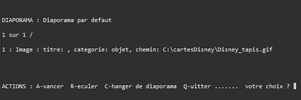

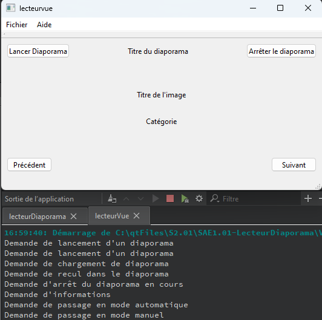
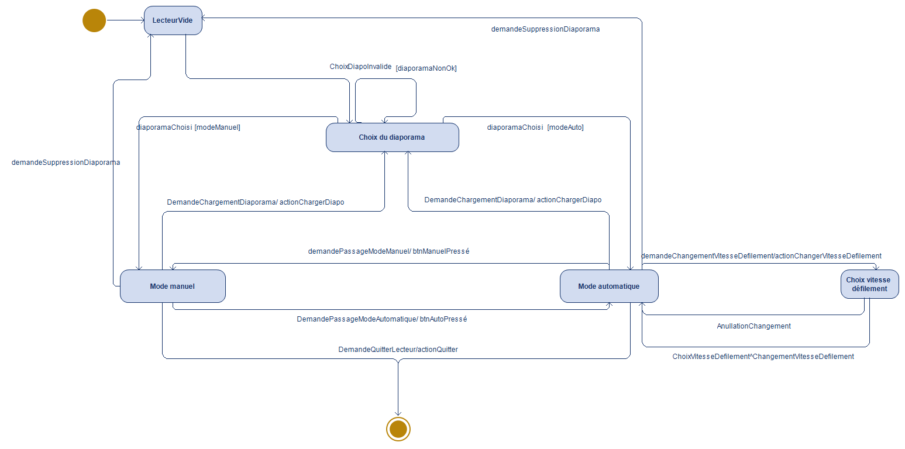
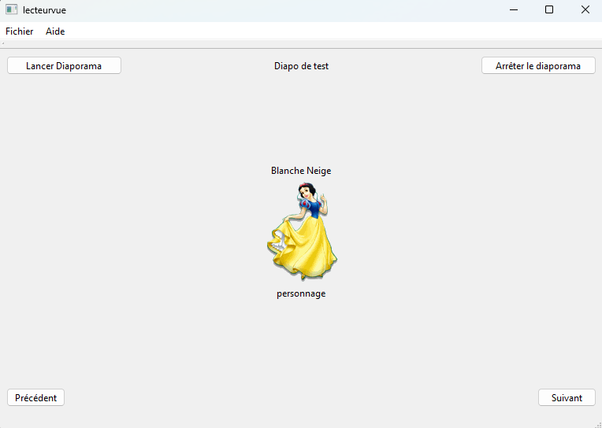
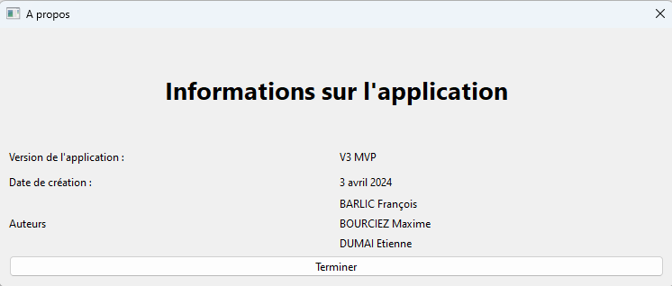
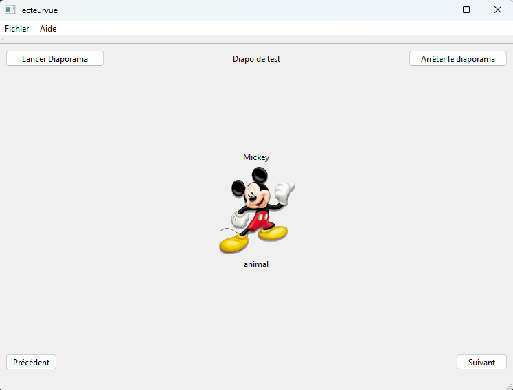
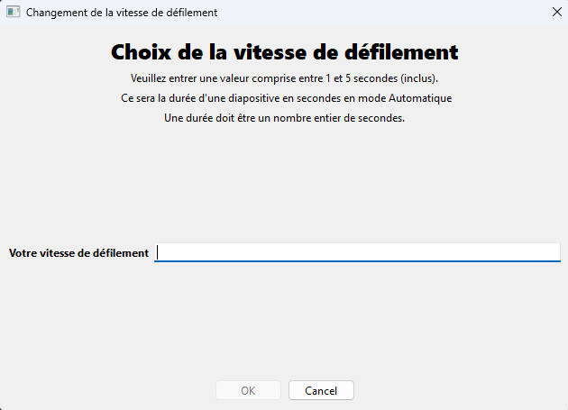
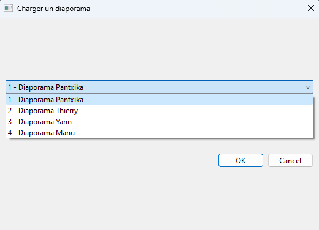
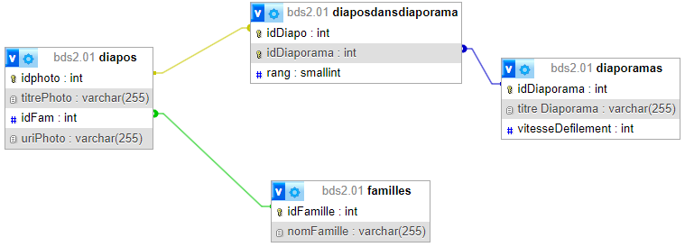
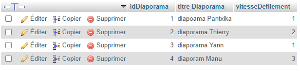
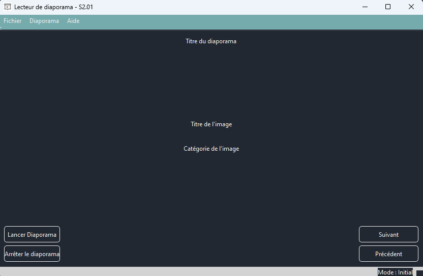
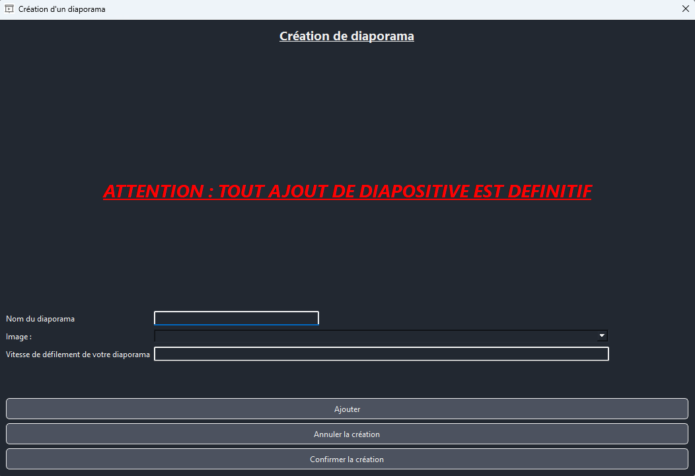
Lexique :
- Qt Creator : Environnement de développement intégré (IDE) pour le développement d'applications logicielles avec l'interface graphique en C++.
- UML : Langage de modélisation graphique à base de pictogrammes conçu pour fournir une méthode normalisée pour visualiser la conception d'un système.
- qDebug() : Fonction de Qt qui permet d'afficher des messages dans la console de débogage de Qt Creator.
- Modèle MVP : Modèle de conception qui sépare les données de l'interface graphique et de la logique de l'application.
- Base de données : Système de gestion de données permettant de stocker et de manipuler des données structurées.
- SQL : Langage de programmation permettant de manipuler des bases de données relationnelles.
- CSS : Langage de style permettant de définir l'apparence des éléments d'une page web.